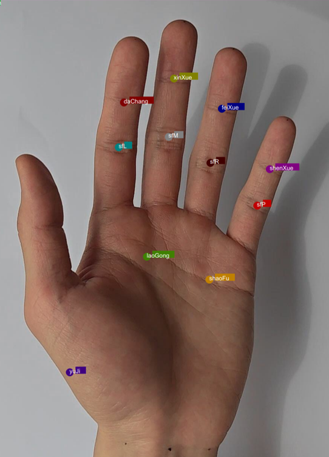
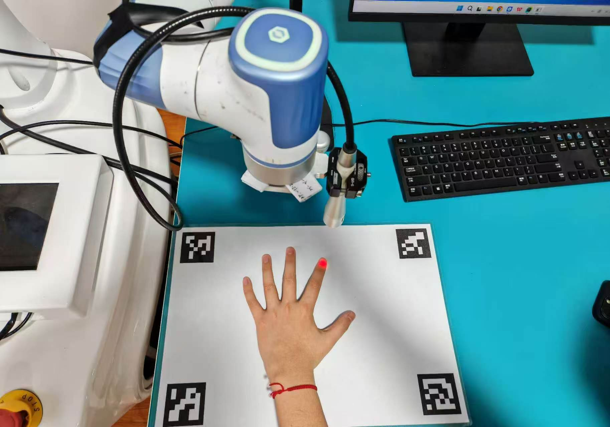

手部腧穴机器人
2024
概述
与上海第七人民医院针灸科专业中医师协作，构建了超过 6000 张手部穴位图像的专业数据集。改进轻量级 YOLO 模型并在该数据集上训练，精度达到 0.99。设计了基于 ArUco 标记的一体化手眼标定板，可同时用于图像采集中的透视变换和手眼标定，实现满足腧穴机器人临床需求的机械臂标定。
成果展示


×

2024
与上海第七人民医院针灸科专业中医师协作，构建了超过 6000 张手部穴位图像的专业数据集。改进轻量级 YOLO 模型并在该数据集上训练，精度达到 0.99。设计了基于 ArUco 标记的一体化手眼标定板，可同时用于图像采集中的透视变换和手眼标定，实现满足腧穴机器人临床需求的机械臂标定。

